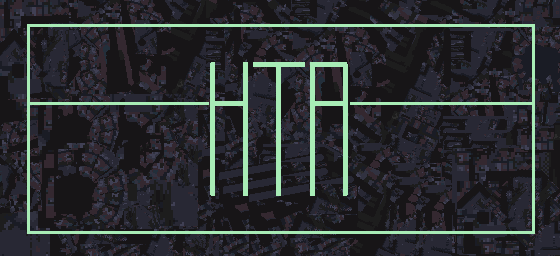
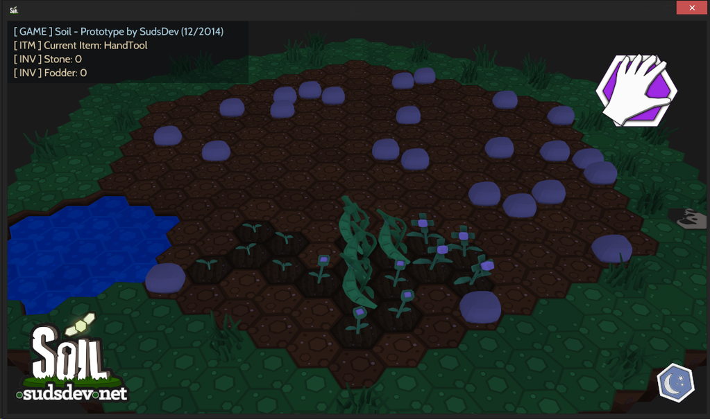
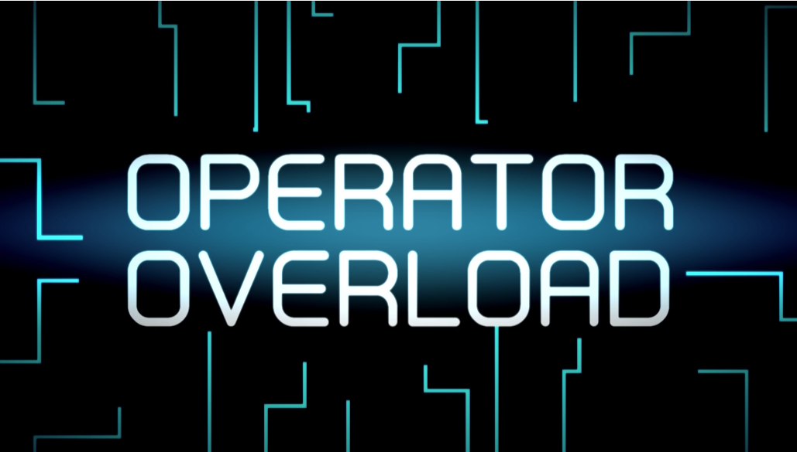
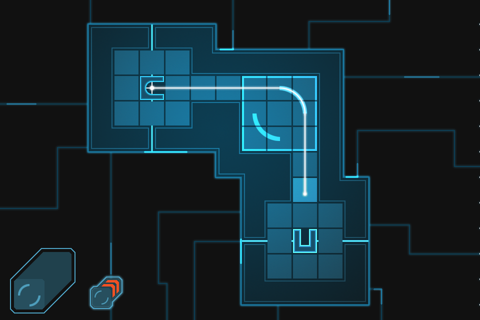

A free and open cross platform game development engine.
About
luxe is a free, open source cross platform rapid development haxe based game engine
for deploying games on Mac, Windows, Linux, Android, iOS and WebGL.


luxe is built on top of open source technologies, and proudly powered by Haxe. It’s built on top of snow, uses flow to build and is built with simplicity in mind. You code only in haxe, and deploy to all available platforms.

Quick look
more quick examplesA simple sprite
var player = new Sprite({
texture : Luxe.resources.texture('assets/player.png'),
pos : Luxe.screen.mid,
depth : 4
});
Community
Home
Join the community on http://snowkit.org
and share your projects, ask questions and
view additional setup guides and tutorials.
Please visit http://snowkit.org for the latest news and changes that are happening!
All news regarding luxe is posted on snowkit.org,
plus you get to see what others are making.
Chat
You can also also join the community chat for realtime discussion and help.

Alpha
Please note
luxe is currently considered alpha, which means there may be bugs, inconsistencies, incomplete implementations, and possible minor API changes. It is still considered fairly stable and is being used by multiple tools and games, but there are things to tighten up before 1.0.0 release can be called final.
Join us in developing and testing the engine and tools, below.
2D focus
For version 1.0.0 luxe will focus solely on being a really solid, flexible 2D game engine first. That doesn’t mean that 3D is not possible, there are already 3D tests and examples around the repo but please be aware there is no lighting model, very little 3D file imports this is intentional.
The roadmap will speak more of this soon.
brief design philosophy
luxe is a facilitator
The engine supplies and supports common patterns for making games, like Components/Entity systems, State Machines and Events messaging systems.
These are not enforced and do not stop you from bypassing those in favour of your own specific methodology or architecting.
luxe contains many helpers, functions and systems for you to use when building your games, allowing luxe to be feature packed without being bloated. luxe is minimilistic in core and design, in that application domain features are left up to libraries and the application itself.
It might not supply every feature you need for your specific game, but it will make it very easy to get there quickly. For more concrete examples of this in practice. Click the diagram below for a full picture of the architecture/design.
Guides
view the setup guide
view the luxe guide
Documentation
View API docs
Editor support
Where possible, full code completion and building from the editor is supplied.
Sublime Text (mac/windows/linux)
Atom (mac/windows/linux)
FlashDevelop (windows only)
template is at snowkit-fd, and here is a Download link
Features
Take note there are features that are not listed,
pending features are dissected in the roadmap.
These features may not be what you expect them to be.
Read the design links for more info.
design : Brief details on what the system is about, and contains.guide : User guide link for the feature, explained in depth.
Short list and focuses
Open- Free and Open Source, under the MIT licenseApproachable- high pace through an expressive, easy to use API.RapidFits jam games and long form projects alike.Documentation- continuous focus on documenting with high standardsAudio- OpenAL/HowlerJS backed audio, named or instance based APIRendering- WebGL spec based API, same code on all platformsPortable- written to be ported, supporting new platforms is simplerInput- Low level, immediate, event based OR high level input API for Gamepad, Touch, Keys and Mouse
gameplay
Scene- simple auto scene state managementguideCollision- SAT collision query for shapes/raysguidePhysics- third party framework hooks, i.e nape.guideTransforms- stackable transforms for positioning/renderingguideTiming- control over time scale, per entity fixed rates and moreguideTimer- schedule functions and events into the timeline guideAudio- simple to use but flexible audio apiguide
Rendering
Sprite- visual backed class with animation, flipping etc guideColor- handle HSV, HSL, RGB interchangeably guideRender- automatic or self managed batching of geometryguideRender control- flexible depth, blending and group rendering guideOpenGL- direct or indirect access to WebGL spec APIguideShaders- first class citizen, built into the core of rendering guideCamera- split views, focus, rotation, shake, etc built inguideTilemaps- isometric, ortho support, with import from TiledguideDrawing- easy style shape/geometry drawing API guideNineslice- for scaling of assets like UI elementsguideParticles- simple particle support for quick effectsguideTextures- easy to use texture api, fully supports render to textureguideFonts- BMFont based bitmap font rendering guide
systemic
Assets- cross platform access to assets guideMaths- support for Vector, Matrix and Quaternion based mathsguideStates- modal, transient and stacked state machineguideEvents- expressive filterable local or global event system guideComponents- modular code behavior composition guideStructural- common data structures linkTweening- customized Actuate built in guideUtils- many geometrical and game related utilities apiParcel- control preloading, loading/unloading parcels of assetsguide
Games developed in luxe
Either developed, or developing
The Westport Independent
-Heavier than Air-

SOIL

Equilibrium (working title)

